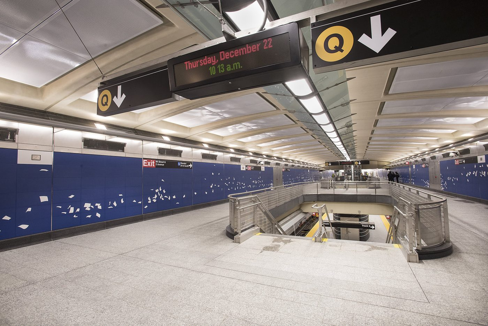
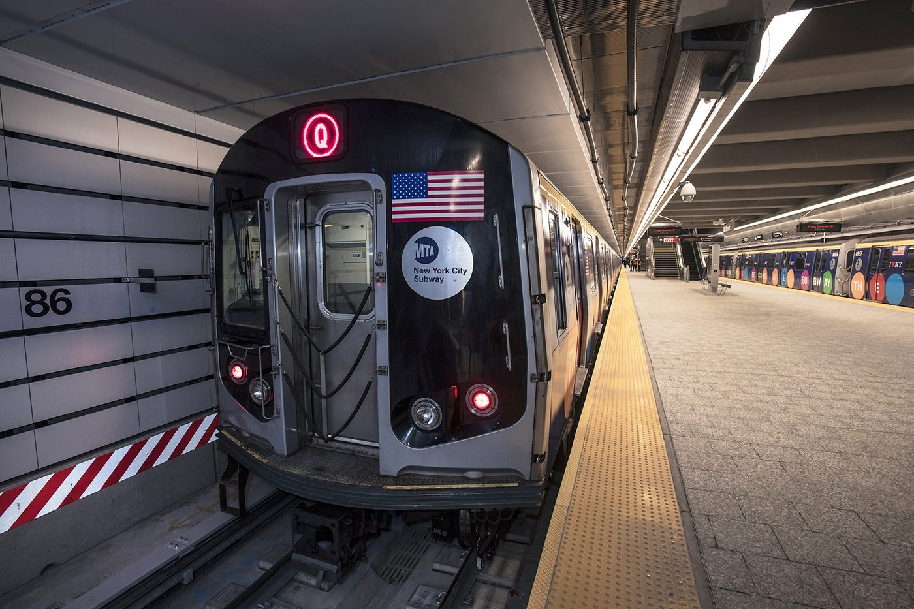

Le panneau du quai 96 St affiche n'importe quoi — répare le programme, et deviens celui ou celle qui COMPREND les variables
En 5e, tu as manipulé la variable comme une boîte étiquetée. En 4e, sur le jardin, tu as écrit un programme complet, tu l'as testé et mis au point.
Cette année, ce qui change : on regarde dans la boîte. Toutes les variables ne se valent pas : un nombre entier, un nombre à virgule, un texte, un vrai-ou-faux ne se rangent pas de la même façon et ne réagissent pas pareil. C'est ce qui explique la moitié des bogues que tu as rencontrés l'an dernier.
Tu arrives maintenant ? Il suffit de savoir qu'une variable porte un nom et contient une valeur qu'on peut changer en cours de programme.
Quatre gestes à faire une fois, au début, et ta séance ne se perdra pas. Tu les as peut-être déjà faits une autre année : refais-les, c'est court. Et si tu ne les as jamais faits, tout est écrit ici — tu n'as besoin de rien d'autre.
NIVEAU-SUJET-TON NOM. Un projet sans nom est introuvable la semaine suivante.Parcours affiché : tous.
Le mode essentiel masque le référentiel, les corrections et les compléments : il ne reste que les consignes et les exercices.
Cinq activités, réparties sur quatre séances. Une case se coche quand l'activité est validée — pas quand elle est commencée.
Cet atelier s'appuie sur ce que tu as fait en 4e et en 5e. Trois questions pour savoir, toi comme le professeur, sur quoi on peut s'appuyer. Elles ne comptent pas dans ta progression et ne sont pas notées — « je ne sais pas » est une réponse utile.
New York, station 96th Street, 7 h 42. Sur le quai, le panneau lumineux annonce : « Train Q — 412 min ». Quatre cent douze minutes ?! Les voyageurs rient, la MTA (le métro new-yorkais) beaucoup moins. Le stagiaire qui a modifié le programme du panneau est reparti en laissant un code plein de bugs.
Ton collège est jumelé avec une classe de Manhattan, et leur professeur vous met au défi : « Nos élèves n'ont pas trouvé les bugs. Vos élèves de Martinique feront-ils mieux ? » Pour gagner, il faut d'abord maîtriser ce que 9 collégiens sur 10 croient connaître sans la comprendre : la variable. Puis ses types. Puis la mise au point — l'art de prouver qu'un programme marche VRAIMENT.

Question 1 — combien de stations entre 96 St et Times Square ?
Méthode : pose ton doigt sur le repère 📍 (96 St), fais-le glisser le long du trait jaune, et compte CHAQUE point rencontré — sans compter la station de départ :
86 St → 1 · 72 St → 2 · Lexington Av–63 St → 3 · 57 St–7 Av → 4 · Times Sq–42 St → 5
Réponse : Times Square est la 5e station après la nôtre (on peut aussi dire : 4 stations intermédiaires, puis l'arrivée). Remarque de pro : c'est possible parce que la Q est express dans Manhattan — en local, il y aurait plus d'arrêts.
Question 2 — le panneau dit « Q — 3 min » : dans combien de temps peux-tu être à la plage ?
Étape 1 — comprendre le panneau : « 3 min » = le temps d'ATTENTE avant que le train arrive au quai.
Étape 2 — lire l'indice du plan : le TRAJET complet 96 St → Coney Island dure environ 50 min.
Étape 3 — poser l'addition : temps total = attente + trajet = 3 + 50 = 53 minutes.
Étape 4 — répondre par une phrase : « Je peux avoir les pieds dans le sable dans environ 53 minutes, un peu moins d'une heure. »
Pourquoi « environ » (le signe ≈) ? Parce qu'un trajet réel varie — affluence, arrêts prolongés… Donner un résultat avec la précision QUI CONVIENT AU BESOIN, c'est déjà l'esprit de la mise au point que tu vas pratiquer dans cet atelier.

| Code | Formulation du référentiel (recopiée, au mot près) | Où elle se travaille ici |
|---|---|---|
| 3e_C9.1 | Élaborer ou concevoir un algorithme permettant de répondre au besoin visé, puis le traduire en un programme structuré (appel de sous-programmes ou de fonctions), le tester et le mettre au point. | Activité 5 — c'est là que la compétence se joue entièrement : tu élabores l'algorithme du capteur d'air, tu le traduis en une fonction (le « programme structuré » du référentiel), tu la testes au banc, et tu la mets au point après avoir trouvé le défaut de frontière. Les activités 1 à 4 la préparent : on n'élabore pas un programme quand on croit encore que = veut dire « égal ». |
Quatre verbes dans une seule compétence — élaborer, traduire, tester, mettre au point. C'est le sommet du cycle, et c'est pour cela que l'atelier est long : chacun demande son moment.
| Niveau | Le verbe | Ce qu'on fournit à l'élève |
|---|---|---|
| 5e_C9.1 | analyser un programme simple fourni et le tester | tout : le programme existe, il fonctionne |
| 5e_C9.2 | modifier un programme fourni | le programme, à retoucher |
| 4e_C9.1 | modifier un algorithme | l'algorithme, amputé d'une exigence |
| 4e_C9.2 | traduire un algorithme en programme | l'algorithme complet |
| 3e_C9.1 | élaborer, traduire, tester, mettre au point | rien que le besoin |
| 3e_C9.2 | réaliser et mettre au point, avec interaction humain-machine | rien que le cahier des charges |
Lis la dernière colonne de haut en bas : on retire progressivement ce qu'on donne. La difficulté du cycle ne tient pas à des programmes plus longs — elle tient à ce qui manque au départ. En 3e, il ne reste que le besoin, et c'est à toi de fabriquer tout le reste.
Comment élaborer un algorithme, le traduire en un programme structuré, puis le tester et le mettre au point — sans se faire piéger par ses propres variables ?
Le niveau attendu est exactement le même qu'avec la consigne libre : ces débuts de phrases retirent l'obstacle de la rédaction, pas l'exigence.
🅰 Avec matériel : l'éditeur Vittascience piloté vers une carte réelle (Arduino/mBot2 du collège, très basse tension uniquement — le TP mBot2 du dossier prolonge cet atelier).
🅱 En simulation : l'éditeur Python Vittascience est embarqué dans cette page — blocs et Python côte à côte, console intégrée. C'est le parcours principal. Cherche les barres 🧪 bleues dans les séances 2, 3 et 4 : un clic les déplie.
🅲 Sans matériel : le simulateur de mémoire (séance 1, activité 1 — le bouton « ▶ Étape suivante ») + les tables de suivi (séance 1, activité 2) à refaire au cahier.
Question directrice : que se passe-t-il RÉELLEMENT dans la mémoire quand un programme s'exécute ?
🎨 Lis le code en couleurs : variables · "textes" · nombres · mots-clés · = et opérateurs
Après l'exécution complète, réponds :
Regarde le simulateur : à la ligne 4, la boîte minutes a-t-elle DEUX valeurs, ou une seule ? Une boîte ne contient jamais qu'UNE valeur à la fois.
Pour la question 4 : Python commence par calculer TOUT ce qui est à droite du = (il lit minutes, trouve 4, calcule 4 − 1 = 3). Ce n'est qu'À LA FIN qu'il range le résultat dans la boîte de gauche. C'est pour ça que la même variable peut être des deux côtés sans contradiction.
1. 3 — le calcul 4 − 1 est rangé dans la boîte. 2. Il est perdu : affecter,
c'est remplacer le contenu ; l'ordinateur n'a pas de corbeille pour les anciennes valeurs.
3. « Mets cette valeur dans la boîte » — c'est le sens le plus important de tout l'atelier :
en Python, = n'est PAS le égal des maths (le égal de comparaison s'écrit ==).
4. De droite à gauche — calcule d'abord, range ensuite.
Erreur classique : lire x = x + 1 comme une équation (« impossible, x ne peut pas
être égal à x+1 ! »). Ce n'est pas une équation : c'est un ORDRE donné à la mémoire.
= signifie « range dedans » — et il REMPLACE ce qui s'y trouvait.🎯 Critère de réussite : je peux dire ce que contient chaque boîte après CHAQUE ligne, sans exécuter.
passages = 0 groupe = 3 passages = passages + groupe groupe = groupe - 1 passages = passages + groupe
Fais ta table au brouillon : deux colonnes (passages, groupe), une ligne par ligne de programme. Remplis case par case, sans sauter.
Ligne 3 : à droite, passages + groupe = 0 + 3 = 3 → je range 3 dans passages. Ligne 4 : groupe - 1 = 3 − 1 = 2 → dans groupe. Ligne 5 : 3 + 2 = 5 → dans passages. La table ne ment jamais.
Table de suivi : L1 → passages=0 · L2 → groupe=3 · L3 → passages=3 · L4 → groupe=2 ·
L5 → passages=5. La boîte passages a changé 3 fois (0, puis 3, puis 5).
Le programme accumule : c'est le motif « compteur », le plus utile de toute la programmation
(points d'un jeu, voyageurs d'une station, mesures d'un capteur…).
Erreur classique : répondre 6 à la ligne 5 en utilisant l'ANCIEN groupe (3) — la table de suivi t'oblige à utiliser la valeur COURANTE (2). C'est exactement pour ça qu'elle existe.
🎯 Critère de réussite : ma table donne la même chose que l'ordinateur — vérifie-le en recopiant le programme dans l'éditeur de la séance 2 !
Question directrice : pourquoi le panneau affiche-t-il « 412 min » — et quel rapport avec des guillemets ?
Expérience A : print(3 + 4)
Expérience B : print("3" + "4")
Expérience C : print("Train " + "Q", 2 + 1, "min")
🅰 Avec la carte : exécute les trois expériences dans l'éditeur, puis téléverse la dernière sur la carte — l'affichage doit être identique à la console.
🅲 Sans matériel : ouvre quand même la barre 🧪 (elle enregistre ton passage), écris les trois expériences au cahier et reporte les résultats donnés par la correction de l'activité.
L'éditeur s'ouvre DANS la page : blocs à gauche, Python à droite, console en bas. Recopie chaque ligne puis clique ▶. (Connexion Internet nécessaire pour l'éditeur ; le reste de la page fonctionne hors ligne.)
🌐 Cette activité a besoin d'Internet. L'éditeur ci-dessous est hébergé par Vittascience : si le cadre reste blanc, c'est la connexion, pas ton ordinateur. Dans ce cas, écris ton programme sur le cahier — la logique est ce qui compte, la saisie se fera à la séance suivante.
③ Je reporte ce que la console a affiché :
Regarde le document 2 : la carte str dit « entre guillemets = TEXTE, même si ce sont des chiffres ». Que fait + avec deux textes ?
Si tu n'arrives pas à ouvrir l'éditeur (pas de réseau), utilise la version 🅲 : applique la règle du document 2 — 3 + 4 (deux int) → addition → 7 ; "3" + "4" (deux str) → collage → "34". Puis reporte ces valeurs.
A : 7 (int + int = addition). B : 34 — pas « trente-quatre » : le TEXTE « 34 »,
les deux caractères collés (concaténation). C : Train Q 3 min — "Train " + "Q"
colle les textes, 2 + 1 additionne les nombres, et la virgule de print
insère les espaces. Conclusion : le + colle les str, additionne les int/float. Le bug :
"4" + "1" donne "41" → « 41 min ». Avec « 412 min », le stagiaire avait collé
« 4 », « 1 » et « 2 »…
Erreur classique : croire que "5" et 5 sont pareils « puisque c'est
le même chiffre ». Pour l'ordinateur, l'un se calcule, l'autre s'affiche. int("5")
fait passer du texte au nombre — c'est le décodeur.
type(x).🎯 Critère de réussite : je peux prédire le résultat de x + y rien qu'en regardant les guillemets.
Question directrice : sauras-tu trouver les TROIS bugs que la classe de Manhattan a manqués ?
Q - 96 St - 3 min et la température en °C. Trouve les 3 bugs 🔎 : pour chacun, choisis sa LIGNE puis sa CORRECTION. Termine en assemblant le programme corrigé dans l'éditeur pour PROUVER qu'il affiche la bonne chose (badge 🔓).1 train = "Q" 2 quai = "96 St" 3 minutes = "2" + "1" 4 temperature_f = 77 5 temperature_c = (temperature_f - 32) / 1,8 6 message = train + " - " + quai 7 minutes = minutes - 1 8 print(message, minutes, "min |", temperature_c, "C")
🔎 Bug n°1 — les minutes fantômes.
🔎 Bug n°2 — la virgule qui fâche Python.
🔎 Bug n°3 — le calcul impossible. Même corrigée en 2 + 1… la ligne 7 va planter si on garde la ligne 3 d'origine.
🅰 Avec la carte : le programme corrigé est celui que tu téléverses — le panneau réel affiche alors la bonne durée.
🅲 Sans matériel : ouvre la barre 🧪, recopie le programme corrigé au cahier ligne à ligne, et vérifie ta ligne 8 avec la correction complète.
Recopie le programme avec tes 3 corrections, exécute, et compare avec ta réponse ci-dessus. C'est ton badge d'exécution : la vérification de l'activité l'exige.
🌐 Cette activité a besoin d'Internet. L'éditeur ci-dessous est hébergé par Vittascience : si le cadre reste blanc, c'est la connexion, pas ton ordinateur. Dans ce cas, écris ton programme sur le cahier — la logique est ce qui compte, la saisie se fera à la séance suivante.
Bug 1 : séance 2, expérience B. Bug 2 : document 2, carte float. Bug 3 : quel est le TYPE de minutes après la ligne 3 d'origine ?
Chasse aux bugs méthodique : ① je tiens la table de suivi avec les TYPES (minutes : str "21" ← alerte !) ; ② je repère les opérations impossibles (str − int) ; ③ je corrige UNE chose à la fois et je réexécute à chaque fois. Un bug corrigé peut en révéler un autre — c'est normal, c'est la mise au point.
Bug 1 : ligne 3, "2" + "1" colle les textes → "21" ; correction :
minutes = 2 + 1. Bug 2 : ligne 5, 1,8 — en Python la virgule sépare des
éléments, elle ne fait pas les décimales ; correction : 1.8. Bug 3 : avec la ligne 3
d'origine, minutes est un TEXTE, et "21" - 1 déclenche une erreur de type
(TypeError) — on ne soustrait pas un nombre d'un texte. Programme corrigé : minutes = 3 puis 3 − 1 = 2,
(77 − 32)/1.8 = 25.0 → Q - 96 St - 2 min | 25.0 C.
Erreur classique : corriger le bug 1 et s'arrêter là parce que « ça a l'air bon » — sans exécuter, le bug 2 attend tranquillement la ligne 5. On ne déclare jamais un programme réparé sans l'avoir RÉEXÉCUTÉ en entier.
🎯 Critère de réussite : mon programme corrigé affiche exactement Q - 96 St - 2 min | 25.0 C dans la console.
Question directrice : comment PROUVER qu'un programme répond au besoin — et pas seulement qu'il « a marché une fois » ?
① La traduction — complète la fonction :
def vitesse_ventilation(air, train_arrive):
if air ▢1 100:
return ▢2
elif train_arrive:
return 2
else:
return ▢3
air > 100) renvoie vraiment.| Test | air | train_arrive | Attendu (besoin) | Obtenu | |
|---|---|---|---|---|---|
| T1 — heure de pointe polluée | 150 | False | 3 | — | |
| T2 — un train approche | 60 | True | 2 | — | |
| T3 — nuit calme | 40 | False | 1 | — | |
| T4 — LE CAS LIMITE | 100 | False | ? | — |
③ Tranche le cas limite : la MTA précise son besoin : « à 100 exactement, l'air est déjà trop pollué : il faut ventiler à fond ».
Écris la fonction avec >=, puis appelle-la : print(vitesse_ventilation(150, False)), etc. Quatre lignes d'appel = ton banc de tests personnel, réutilisable à chaque modification.
🌐 Cette activité a besoin d'Internet. L'éditeur ci-dessous est hébergé par Vittascience : si le cadre reste blanc, c'est la connexion, pas ton ordinateur. Dans ce cas, écris ton programme sur le cahier — la logique est ce qui compte, la saisie se fera à la séance suivante.
▢1 : « pollué » = l'indice DÉPASSE 100. ▢2 : « à fond », c'est la plus grande vitesse. Pour le T4 : 100 > 100, c'est vrai ou faux ?
Un banc de tests s'écrit AVANT de croire le programme fini : un test par cas du besoin + un test par FRONTIÈRE (ici, exactement 100). Si le besoin dit « à partir de 100 », la condition est >=. Et après toute correction, on rejoue tout : une correction peut casser ailleurs (c'est la non-régression, comme au jardin connecté de 4e).
① if air > 100: return 3 / else: return 1 — et une fonction parce
qu'elle se REJOUE et se teste à volonté. ② T1→3 ✔, T2→2 ✔, T3→1 ✔, T4→1 : avec
>, 100 n'est pas « supérieur à 100 », donc la station ventile doucement dans un air
déjà pollué. ③ Correction >=, puis on REJOUE LES QUATRE TESTS : T1, T2, T3 doivent
toujours passer (non-régression) et T4 renvoie désormais 3.
Erreur classique : écrire air = 100 dans la condition — un seul =
AFFECTE (il remplirait la boîte !), c'est == qui compare. Python te sauvera par une
erreur… mais pas dans tous les langages.
🎯 Critère de réussite : mes 4 tests passent, y compris le cas limite — et je sais expliquer pourquoi on rejoue tout après une correction.
🔁 Retour sur ton hypothèse de départ (« où va l'ancien 4 ? ») :
Le niveau attendu est exactement le même qu'avec la consigne libre.
= ne veut pas dire ____ , il veut dire ____ .🚦 Je me positionne (🔴 pas encore · 🟡 avec aide · 🟢 seul·e · ⭐ je peux l'expliquer) :
🧭 Et après ? Le TP mBot2 en Python fait rouler tes variables sur un vrai robot (version 🅰). En 4e, tu as programmé l'arrosage du jardin connecté — relis-le : tu y verras des variables partout, maintenant que tu sais les voir.
Le QCM de l'atelier t'attend : 30 questions (dont 3 illustrées), réparties en 4 familles — variables, types, lecture de programme, mise au point. Corrections détaillées, réfutation de chaque piège, sauvegarde automatique : le meilleur thermomètre avant l'évaluation.
🧠 M'entraîner avec le QCM (30 questions)Trois défis ouverts, sans vérificateur — pour le plaisir d'aller plus loin :
🗽 Défi convertisseur : dans l'éditeur embarqué, écris miles_vers_km(d) (1 mile = 1.609 km)
et fahrenheit_vers_celsius(t) — puis convertis un marathon de New York (26.2 miles) et la canicule
de juillet (98 °F). Bonus du bonus : écris ton banc de tests AVANT les fonctions.
🎫 Défi MetroCard : une carte coûte 1 $, chaque trajet 2.90 $. Écris prix_total(nb_trajets),
puis ajoute la règle « au-delà de 12 trajets par semaine, les suivants sont gratuits ». Quels cas limites
ton banc de tests doit-il couvrir ?
👨👩👧 Défi famille : avec trois vraies boîtes de cuisine étiquetées train,
minutes, quai et des papiers comme valeurs, fais exécuter le programme de
l'activité 1 à quelqu'un de ta famille — toi, tu joues le processeur qui lit les lignes. S'il comprend
pourquoi l'ancien papier va à la poubelle, vous avez gagné tous les deux.
L'éditeur s'ouvre DANS la page : blocs à gauche, Python à droite, console en bas. (Connexion Internet nécessaire pour l'éditeur ; le reste de la page fonctionne hors ligne.)
🌐 Cette activité a besoin d'Internet. L'éditeur ci-dessous est hébergé par Vittascience : si le cadre reste blanc, c'est la connexion, pas ton ordinateur. Dans ce cas, écris ton programme sur le cahier — la logique est ce qui compte, la saisie se fera à la séance suivante.